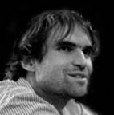

|
visitez . . . |
|
krvik totr >
| Petr Jediný Novotný |
bio >
1979 > narozen 20. 2. 1979 v Praze > porozen do kulturou žijící rodiny: matka Jiøina knižní redaktorka, pøíležitostná básníøka (Óda na hovno, 1965) a neustávající podpora Krvik Totr; otec literární vìdec; babièka pøekladatelka; a hlavnì dìdeèek Oldøich, surrealistický básník a filosof, který byl "všechno", naè si vzpomenete >>
1987 > ve tøetí tøídì se PJN poznal s Tomášem Koutem a Filipem Votavou > na letním táboøe 1989 pøestal bojovat s Koutem a spoleènì zinscenovali hru o upíru Uriášovi >>
1987 > od dìtství literární parodistická tvorba (první za nìco stojící v roce 1987 Naše dìjiny v datech) >
1990-5 > èasopis Asterix s pøílohou Høbitovní noviny (celkem 20 èísel) >
1992 > založil s Tomášem Koutem dvojici Krvik Totr, nejprve pro legraci, již po roce snaha o vývoj a pùvodní tvorbu >>
1993-7 > studium literárního Soukromého gymnázia Josefa Škvoreckého, tam
od 1995 > navštìvoval vùbec první Literární semináø tvùrèího psaní v ÈR (pod vedením Alexandry Berkové) > 1997 získal 3. místo za prózu Sedmikráska v celorepublikové soutìži O cenu Danny Smiøického > jeho texty v této dobì posunuly Krvik Totr do vážnìjší polohy alba Krví >
1997 > nezmìrná touha studovat DAMU > zavelel smìrem k divadlu, když zmìnil povídku Sáha rodu Rokocù na hru, poté vizualizoval první živé povídky >
1997-2001 > studium žurnalistiky FSV UK zakonèené titulem Bc. > orientace výhradnì na kulturní publicistiku (do roku 2003 pravidelné èlánky v Týdeníku Rozhlas èi Dobré adrese, poté pøíležitostnì; v roce 2003 ještì významná participace v redakci èasopisu ...tsunami... festivalu ...pøíští vlna/next wave..., od 2004 grafikem èasopisu KATaP Øeèištì) > absolvování mj. pøedmìtù Tvùrèí dílny - povídka (D. J. Novotný) a Kreativita v jazyce (Otakar Šoltys) > s Evou Vlèkovou provozována experimentální dvojice Sijamská dvojèata (1999), se Zuzanou Bubnovou spolupráce na høe Šest lidí u stolu (2000 - v rámci jejího pøedvedení první veøejné úèinkování na divadle mimo Krvik Totr) >>
1998-2002 > s Pavlem Langhammerem provozoval neveøejnì experimentální literárnì-hudební dvojici PPP >>
2000 > 1. místo v soutìži O cenu Danny Smiøického za hru Fuj In Soya Oil, kterou napsal s Adélou Tesaøíkovou v rámci obèasné skupiny Všemi smìry (založeno a hra napsána v roce 1997) >>
2001 > s Filipem Votavou založil hudební free-formovou kreaci Petarda (2003 pøejmenovanou na Sdružení pro obnovu dramatické písnì Filtr a veøejnì aktivní) a v témže roce nulté (a prozatím jediné) èíslo èasopisu èasopes >>
2001-4 > nedokonèené studium Literární akademie, orientace na drama - hodiny Tvùrèího psaní u Daniely Fischerové a Milana Uhdeho - D. Fischerová vedla ve 3. roèníku jeho dramatickou práci Mor Amorùv >>
2003-8 > studium katedry autorské tvorby a pedagogiky DAMU (navazující magisterské studium), pod vedením Ivana Vyskoèila (dialogické jednání) a vedle dalších Pøemysla Ruta (autorské ètení a písnièka), Vítìzslavy Fryntové (pøednes), Jany Pilátové (antropologické integraèní dílny) a Zdeny Hadrbolcové/Jana Hanèila/Jarušky Pokorné (herecká propedeutika), Zdenièky Kratochvílové/Moniky Rebcové (pohyb) > zakonèeno diplomovou prací Promìna autorství a titulem MgA. >>
od 2004 > pøíležitostný zvukaø/osvìtlovaè projektù pøátel (2004-6 všechna uvedení inscenace Crave v Rubínu; 2005 Bakchantky; 2005 projekty KATaP - Mexico Lucie Marquezové, Takový normální veèer Markéty Hrubínové a Veroniky Hrèkové; od 2005 stálá spolupráce s autorským poøadem Boršè Evy Èechové (Špreòarové) a Hanky Malaníkové) >>
2005/6 > dramaturg poøadù Bon jour fixe Katedry autorské tvorby DAMU v Klubu v Jelení >>
2006 > absolventské pøedstavení KATaP - autorská inscenace "nahoøe" s Lucií Krupièkovou a Soniou Cieœlar v Øetízku (malá scéna DISKu) - spoluscénáø, spolurežie, herec, hudební režie, lightdesign a technika >>
2007 > autorská inscenace Ona & On se Zuzkou Macákovou a Filipem Votavou v Malém Nosticovì divadle/Nablízku a Øetízku - spoluscénáø, spolurežie, herec, hudební režie, lightdesign, technika a produkce >>
2007/8 > studijní stáž ve Francii na UFR Arts (dép. Arts du spectacle - Master 2 Pro) Université Michel de Montaigne - Bordeaux III. > 2008 zakonèeno absolventským pøedstavením: autorská inscenace ve francouzštinì Des centaines s Hammou Bullivavalevou v Carré des Jalles - scénáø, režie, scénografie, lightdesign, zvuk, hudební režie, herec > obhajoba závìreèné diplomové práce En français >>
2008 > v únoru rozpouští z osobních dùvodù Divadílnu a omezuje Krvik Totr na zakládající dvojici; pozastavuje na neurèito èinnost Krvik Totr >
>> v Krvik Totr obstarává vedle spoleèného psaní a hraní ještì režii (první léta sám, od 2003 s TK), studiové nahrávky, veškeré výtvarné práce a propagaci s manažerstvím, produkcí a webem...
>> mimo Krvik Totr se v umìní jako herec vyskytuje jen zcela výjimeènì (napø. malá role ve filmu Luboše Pavla Štìkot, 2004, èi v dokumentu Pavla Kolaji o Ivanu Vyskoèilovi, 2006; hercem a spolupracovníkem na scénáøi/režii v projektu Luboše Pavla Kdo hledá, najde (Piráti), 2006/7) >>>
|
visitez . . . |
|
| zpátky mezi lidi |
| Tomáš Kout |
bio >
1979 > narozen 28. 8. 1979 do Nového Vestce > umìlecké sklony podìdil po pøedcích z matèiny strany: 1.) pradìdeèek babièky (Eva Pavelková) F. J. Frankl, kabaretní komik, založil první èeský tingl-tangl (ve dvojici s Josefem Bachmanem) (Franklùv text posloužil jako podklad Árie pani domácí v Návratu z proutí); 2.) jeho syn (dìdeèek Tomášovy babièky) Jan Frankl byl dlouholetým umìleckým maskérem Malostranské besedy; 3.) bratrancem této neobyèejné ženy je spisovatel Ivan Klíma >>
1982-4 > první nahrávky iniciované dìdeèkem Zdeòkem Koutem >
cca 1985 > improvizované "vystoupení" pro cestující na lince Brandýs nad Labem/Stará Boleslav na interní mikrofon autobusu >
1987 > se rodina pøestìhovala do Prahy >> seznámení s PN a FV > bìhem ZŠ nemnoho pokusù o vtipnou povídku - inspirace povídkami Šimka a Grossmanna, humorem Jaroslava Žáka a èinorodostí PN >
1990 > na táboøe v Hoøièkách vystoupení pro 2 divaèky (praktikantky) s povídkou Šumákovo hospodáøství (Š+G), již pøednesl víceménì zpamìti >
1992 > založil s PN dvojici Krvik Totr, nejprve pro legraci, již záhy snaha o vývoj a pùvodní tvorbu >>
1993 > zúèastnil se natáèení studentského filmu FAMU (dodnes s nejasným výsledkem) >>
1993-6 > hotelová škola v Podìbradech (nedokonèil) > veškerých umìleckých poèinù se úèastní z popudu druhých, proto po odchodu do Podìbrad výrazný útlum tvorby >
1995 > rozpracováno nìkolik námìtù v reakci na Novotného Vokovický park (1994), nic nedokonèil >
1996-9 > zpìt do Prahy, pøestup na Gymnázium prof. Jana Patoèky, zde pubertálnì-melancholické tvùrèí pookøání, pouze pro šuplík > 1999 literární referát na téma Semafor naznaèil zájem o divadla malých forem >
1999-2001 > studium VŠCHT, ukonèeno pro neplnìní studijních povinností (práce na Støíbrné stranì 20. století) > 2000 zaèíná èíst hry V+W >
2001 > (leden) si koneènì uvìdomil a pøipustil zájem o divadlo a ze zvìdavosti se hlásí na VOŠ hereckou v Michli >>
2001-4 > studium Vyšší odborné školy herecké a moderátorské, ve skupinì Lucie Trmíkové a Jana Nebeského, kteøí zásadním zpùsobem ovlivnili jeho nahlížení na divadlo a život vùbec >
2001-4 > úèinkování v nìkolika absolventských pøedstaveních v Pidivadle (nejvýznamnìjší - kromì Míši Kulièky - jsou Zdravý nemocný, Crave a Bakchantky) >
2002 > natáèel pohádku O princeznì Kateøinì a lesní víle Leontýnì (role prince Jaromíra; r. Jaroslav Bouše) > 2003 úèinkuje v klipu Oheò a sníh skupiny 220V >
2004 > se stal èlenem Divadla Extrém (inscenace Naše Pobøežní hlídka, Harry Lotter, Nìkdo to rád sýra ad.) >
2004-5 > kombinované studium Teorie a dìjin divadla na Masarykovì univerzitì v Brnì >
2004 > vcelku pravidelnì navštìvuje hodiny Dialogického jednání na KATaP DAMU pod vedením Ivana Vyskoèila (navazuje od 2007) >
2004-6 > inscenace Crave (pùvodnì Pidivadlo) se stala domovskou inscenací A-studia Rubín >
2004-5 > úèinkuje v èerném divadle Animato v inscenaci Yellow Submarine >
od 2005 > bìhem zkoušek Návratu z proutí (2005) mu zachutnala režie, zato produkcí (Bakchantky) je znechucen >
od 2006 > zamìstnán v Intercateringu >>>
další krvik totr >
| zpátky mezi lidi |
|
 |
Filip Votava |
bio >
1979 > narozen 6. 1. 1979 v Praze > kulturní rodina: matka Helena nìkolikrát vystoupila v poøadu televize NDR Ein Kessel Buntes, babièka odehrála roli Dory v Tartuffovi v Nelahozevsi na nádvoøí, dìdeèkovi Oldøichovi nìco otiskli i v Ruïásku >> na pøelomu prvého a druhého stupnì základní školy vydal 3 èísla populárnì nauèného èasopisu s provizorním názvem Naše rodina pro èleny své rodiny >
1987 > ve tøetí tøídì se poznal s Petrem (tehdy nejediným) Novotným a Tomášem Koutem >
1993–7 > studium Obchodní akademie, na rozlouèenou se blýskl maturitní písemnou prací z èeského jazyka na téma Vy zíráte, my zíráme (fejeton o všudypøítomnosti reklamy, skartováno 2002), ètenou pøed všemi ètvrtými roèníky >
od 1994 > spolupráce s Krvik Totr typu „Pes jitrnièku sežral“ apod. >
od 1996 > privátní hrátky v kytarovém duu s Pepou Šimonem >
1997–2000 > studium tzv. Vyšší odborné školy cestovního ruchu a hotelnictví, obor prùvodcovství, zakonèené tzv. absolutoriem a titulem DiS. >
od 2000 > další Krvik Totr > herec a výhradní autor veškeré hudby (od 2005 se o hudbu dìlí se Soniou Cieœlar)
2000-2 > civilní služba na novobutovické škole >
od 2002 > zamìstnán v cestovním ruchu nebo teletextu nebo nezamìstnán >>
2001 > založil s Petrem Novotným freeformovou kreaci Petarda (2003 pøejmenovanou na Sdružení pro obnovu dramatické písnì Filtr) - ústøedním poèinem CD Teroristé to mají jisté (2002), od 2004 pravidelné vstupy Filtru do pøedstavení Krvik Totr
2003-4 > bøezen nebo duben 2003 až kvìten nebo èerven 2004 baskytarista skupiny Sextet orange >
od ledna 2004 > bere hodiny hry na baskytaru u Petra Pavlíka (Yo Yo Band, Anticage) v rockové škole Come To Jam >
od podzimu 2004 > se z kytarového dua Filip/Pepa stává skupina P.O.City (dále hrají Petr Øehák, Filip Kutiš a Monika Ronèáková), expandující i obèasnými koncerty
>> v Krvik Totr byl do 2005 výhradním autorem hudby a vždy tradièním tøetím v tradièních scénkách >>>
|
visitez . . . |
|
| zpátky mezi lidi |
© 2003 Krvik Totr Limity.